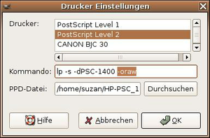

Drucker Tipps
Archivierte Anleitung
Dieser Artikel wurde archiviert, da er - oder Teile daraus - nur noch unter einer älteren Ubuntu-Version nutzbar ist. Diese Anleitung wird vom Wiki-Team weder auf Richtigkeit überprüft noch anderweitig gepflegt. Zusätzlich wurde der Artikel für weitere Änderungen gesperrt.
Zum Verständnis dieses Artikels sind folgende Seiten hilfreich:
In diesem Artikel sollen kleine Tipps und Tricks gesammelt werden, die beim Drucken unter Ubuntu helfen können.
Drucker druckt nur Unsinn oder 5% der ersten Seite¶
Man öffnet ein Terminal [1] und gibt
dmesg
ein. In der Ausgabe findet man dann unter anderem Folgendes:
lp0: ECP mode FIFO write timed out
Lösung:
Im BIOS des PCs die Einstellungen des Parallelports von "ECP" auf "Normal" oder auf "EPP" ändern.
CDs bedrucken¶
Es gibt einige Drucker, die CDs direkt bedrucken können; manche aber nur mit dem kommerziellen TurboPrint. Sinnvoll ist es, dafür mit xtpsetup einen zweiten Drucker tp1 oder CD-Drucker einzurichten. Mit xtpconfig sind für diesen Drucker folgende Eigenschaften zu definieren:
Drucker - Qualität: mittel
Papiertyp: CD bedruckbar
Papier - Seitengröße: CD bedruckbar
Probleme mit Tintendrucker und Gimp¶
Es kann vorkommen, dass die Seiten nicht ausgedruckt werden. In Gimp werden in den Druckereinstellungen zu viele Optionen gesetzt. Im Druckdialog gibt es die Option "Drucker Einstellungen", und hier die Zeile "Kommando". Hier steht fälschlicherweise am Schluss die Option "- oraw". Diese Option muss man löschen. 
Drucker druckt Bilder nur mit Gimp ordentlich¶
GIMP nutzt den Druckertreiber Gutenprint, in Edgy liegt dieser in Version 5.0.0 vor. Genaueres zum Gutenprint Treiber findet man auf der Projektseite  . Damit dieser Treiber auch in anderen Anwendungen, wie z.B. OpenOffice.org zur Verfügung steht, müssen folgende Pakete (mit Abhängigkeiten) installiert [3] sein:
. Damit dieser Treiber auch in anderen Anwendungen, wie z.B. OpenOffice.org zur Verfügung steht, müssen folgende Pakete (mit Abhängigkeiten) installiert [3] sein:
foomatic-db-gutenprint (universe [2]) - Foomatic Datenbank für Gutenprint Druckertreiber
cupsys-driver-gutenprint (ab Dapper verfügbar)
Anschließend sind im GNOME-Menü unter
"System -> Administration -> Drucker"
weitere Treiber einstellbar. Ein Beispiel für den Drucker Canon S600:
Reiter "Treiber":
Hersteller: Canon
Modell: S600
Treiber: gutenprint-ijs.5.0 oder gutenprint-ijs-simplified.5.0
Nun ist es auch in anderen Anwendungen möglich, mit dem Gutenprint Druckertreiber zu arbeiten.
- Erstellt mit Inyoka
-
 2004 – 2017 ubuntuusers.de • Einige Rechte vorbehalten
2004 – 2017 ubuntuusers.de • Einige Rechte vorbehalten
Lizenz • Kontakt • Datenschutz • Impressum • Serverstatus -
Serverhousing gespendet von